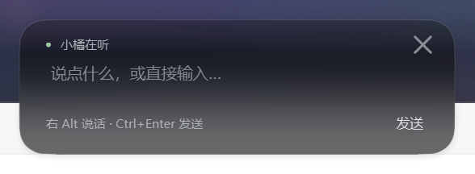

A desktop cat.
A hotkey.
A different computer.
小橘住在你的桌面。按下 Alt + F，聊个想法、整理事项，或者一起处理文件。忙完了，继续安静陪着你。
带小橘回家 →A LITTLE COMPANY. A LITTLE HELP.
现在，
一起做点事。
小橘安静陪着你。需要时，按下 Alt + F，
说说想做什么，一起把事情理清楚。
Windows · 自选模型 · 当前提供源码安装
先核对一下
今天，接下来
做好一件，就轻一点。
不用一下子
做好所有事情。
LESS OPENING APPS. MORE GETTING ON.
一句话，把事情
放回顺序里。
聊天只是入口之一。真正想帮你的，是从“我今天要做什么”，走到“已经安排好了”。
-
01 / 说说
像跟搭子说话一样。
“下午两点上课，晚上八点提醒我给老师发材料。”也可以问问题、修改清单，不必把每句话都变成任务。
-
02 / 核对
先整理，交给你确认。
小橘梳理事项和时间。标题、提醒都能改；听得不确定、指向不清楚的地方，先问清楚。
-
03 / 继续
事情留下，你接着忙。
确认后进入灵动岛的今日事项。到时间轻轻提醒，做好了点一下圆圈；再点一下，也能撤销完成。
A QUIET PRESENCE.
轻一点，
留在桌面就好。
不用每次都打开一个大聊天框。输入贴在原生灵动岛上；思考时，屏幕边缘给一点柔和反馈。
原来的媒体和桌宠内容继续保留。今日事项放在展开内容下面，让你抬眼就知道接下来做什么。
了解原生灵动岛安装
A COMPANION THAT CAN HELP.
陪着你，也帮得上忙。
拖进文件，先问你怎么读。
临时阅读、总结、提取任务、提问，或明确加入个人资料。支持常见文档、文本、图片和代码；文件夹先列直接子项。
PDF / DOCX / XLSX / Markdown / 图片行动之前，边界清楚。
本机操作默认逐次确认。你可以主动开启完全访问；任务变更仍要核对，涉及文件参考内容的操作也保留确认。
设置 → 偏好 → 访问权限先让小橘住下来。
准备 64 位 Python，本机已验证 Python 3.12。下载源码并解压，在根目录运行下面两行；也可以双击「启动 BuddyDesk.bat」。
启动后打开 设置 → 连接，填写模型服务地址、API Key 和模型名。Claude Code CLI 需要另行安装配置。
python -m pip install -r requirements.txt
python main.py基础模式使用 Qt 灵动岛。完整原生体验见右侧标签。
启用原生毛玻璃界面。
准备 Rust MSVC 工具链、Visual Studio C++ Build Tools 和 LLVM，再编译仓库内的 WinIsland。
编译后，分别在两个终端运行助手和灵动岛，先启动助手。媒体功能照常保留，今日事项附在展开内容下方。
# 先编译
cargo build --release --manifest-path winisland/Cargo.toml
# 终端 1：助手
python main.py --winisland --background
# 终端 2：灵动岛
.\winisland\target\release\WinIsland.exe --companion源码 v0.3.0 · 当前不提供已验证的 EXE 发布包
YOUR VOICE. YOUR CHOICE.
选一种，适合你的语音。
在「设置 → 语音」里配置。先试说一句，确认识别正常，再保存。
BEFORE YOU BRING HER HOME.
你可能还想知道。
现在能直接下载 EXE 吗？
当前提供源码安装，尚未发布已验证的 EXE 包。请使用源码下载和安装说明；只安装 Python 可以先使用基础桌宠，原生 WinIsland 需要额外编译。
可以完全离线使用吗？
本地 SenseVoice 语音识别可以离线运行。大模型是否离线取决于你的配置：连接 Ollama 等本机服务需要你先部署模型；选择云端模型或云端语音则需要网络。
我的资料和 API Key 放在哪里？
配置、聊天、任务和个人资料库保存在当前用户的
.buddydesk
目录。使用云端服务时，相关输入或录音会发送给你配置的服务。临时阅读不会默认加入资料库，只有明确选择「加入知识库」才持久保存资料。
它会自己执行电脑操作吗？
默认逐次确认。你可以在「设置 → 偏好」主动开启完全访问，允许助手直接执行本机操作，权限仍受当前 Windows 账户限制。任务清单变更继续核对；文件参考内容不会自动获得完全访问授权。
哪些地方还在继续完善？
当前重点是桌面交互、任务与提醒、文件处理和语音入口。跨电脑安装体验、不同麦克风与语音服务的稳定性，以及更深入的长期记忆和工具能力仍在完善。页面中的交互预览使用示例内容，不会录音或调用模型。